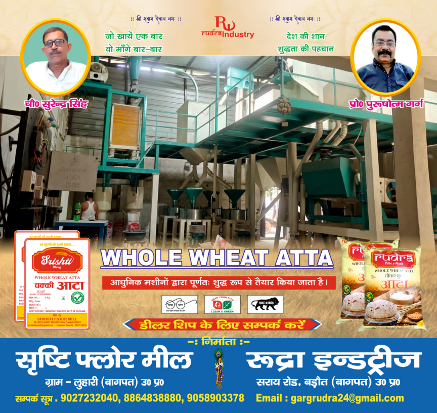
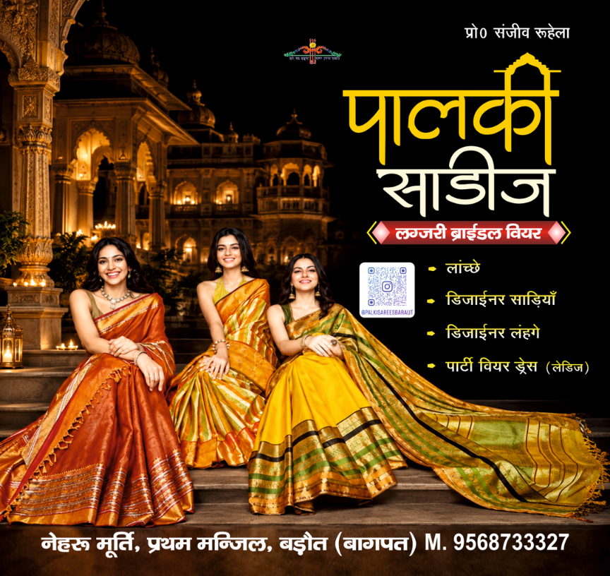
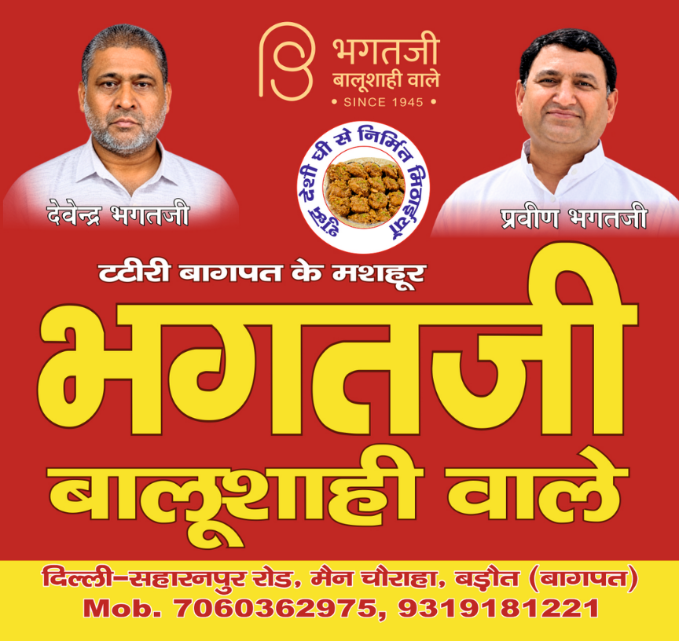
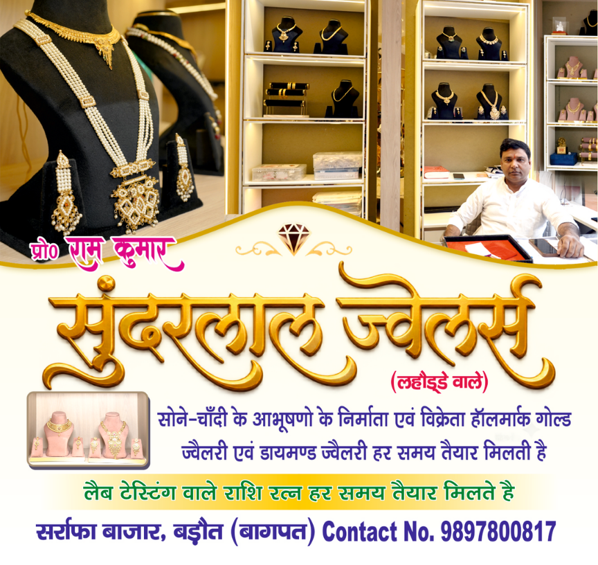

श्री खाटू श्याम सेवा समिति
बड़ौत (बागपत)
☰
⌂ होम
मायरा शो
मायरा अर्पणकर्ता
विशेष आमंत्रित
विशेष सहयोगी
बाबा के रतन
पदाधिकारी
विज्ञापन
सम्पर्क
सहयोगी विज्ञापनदाता
विज्ञापन
विज्ञापन · 1 ↗

विज्ञापन · 2 ↗
विज्ञापन · 3 ↗

विज्ञापन · 4↗

विज्ञापन · 5 ↗
विज्ञापन · 6 ↗
विज्ञापन · 7 ↗
विज्ञापन · 8 ↗
विज्ञापन · 9 ↗

विज्ञापन · 10 ↗